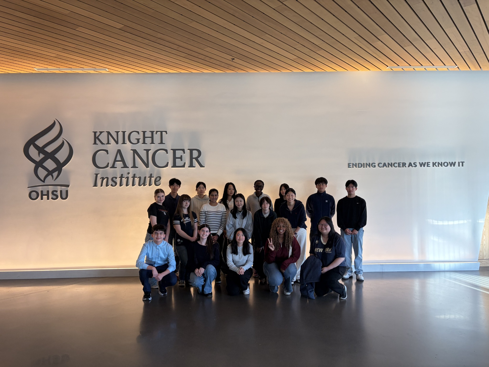
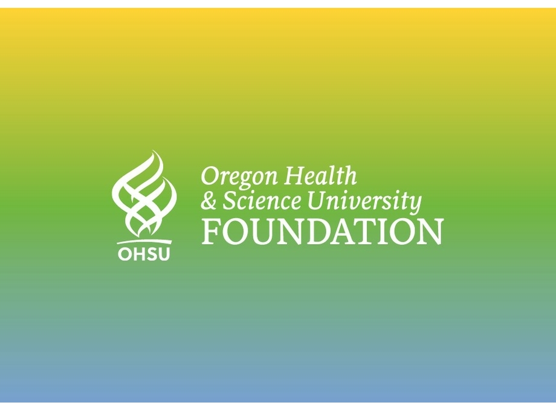

Offer scholarships for students with financial need to be able to provide lab experiences and research mentorship to students from all backgrounds
Partnership for Scientific Inquiry
Partnership for Scientific Inquiry
Your gift helps high school students gain real-world research experience at OHSU.

The Partnership for Scientific Inquiry (PSI) is offered at no cost to students thanks to the generosity of donors and volunteers. Each year, PSI connects talented high school students with scientists and clinicians for a 16-week research course and optional summer internships.
Your support helps us:
Offer scholarships for students with financial need to be able to provide lab experiences and research mentorship to students from all backgrounds
Expand access to equipment, technology, and training
Host the in-person PSI Poster Symposium to showcase student research
1,000+ students mentored since PSI began in 1999
Many alumni go on to STEM majors, medical school, PhDs, and beyond
Donations keep the program free and accessible for all participants
Every dollar directly supports student learning and research experiences. Here’s what your gift can provide:
| Example | Donation Estimate (US$) | Impact |
|---|---|---|
| Scholarships for Summer Internships (15–50 students) | $2,000–$4,000 per student ($30K–$200K/year) | Enables participation for students with financial need |
| In-Person Poster Conference & Student Symposium | $6,000–$12,000 | Venue, printing, awards, food/refreshments |
| Laptops for Accessibility | $1,000–$20,000 | Technology for students with limited access |
| Website & Educational Tools | $500 annually | Keeps the program running online |
| Webcam & Headphones for Virtual Class | $20–$30 per student | Ensures participation in didactic courses |
| Printed Materials & Outreach | $500–$2,000 | Flyers, posters, student booklets |
Click the Donate button below to make a secure, tax-deductible gift through the OHSU Foundation.
Donate to PSI
We are grateful to every donor, sponsor, and volunteer who helps make PSI possible. Together, we can inspire the next generation of scientists and innovators!